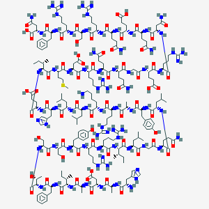

hGH
- Formation
- hGH is created through the expression of the growth hormone genes 1 and 2 in the human genome. 1More recently, hGH has been synthesized with e coli, in conjunction with human genes
- Structure:

- Effects
- The main function of hGH is that of fat loss. This is accomplished through promoting muscle growth by sending certain signals. A side effect of this signal is increased gluconeogenesis and insulin resistance. These all combined result in increased loss of fat
- Detection
- Somatropin is completely metabolized by the liver. Thus, detecting hGH in urine samples is quite difficult. To date, no reliable detection technique has been developed.